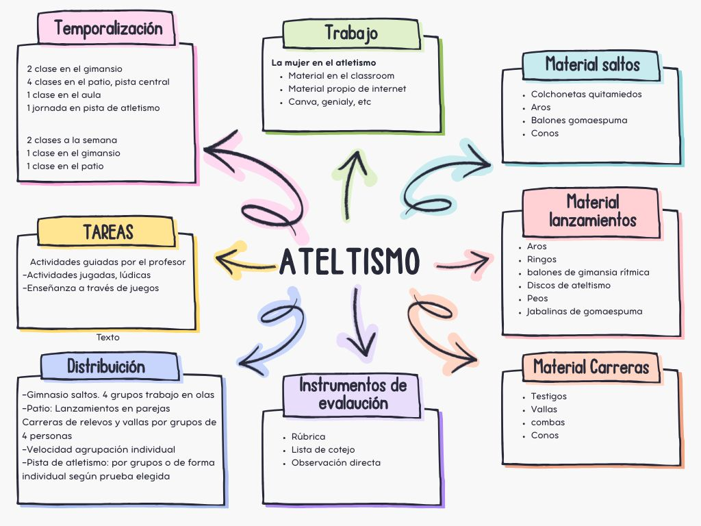

Texto
HOLA!!! Comenzamos con el ATLETISMO
Situación de aprendizaje: Atletismo.
Pruebas del programa (saltos, carreras y lanzamientos)
conceptos teóricos (pruebas, material e instalaciones).
Actividades
- Parte práctica: salto horizontal y triple, vallas, relevos, velocidad, resistencia, lanzamiento de peso y jabalina.
- Teoría: presentación en Genially, vídeos de las pruebas e imágenes de pistas y materiales.
- Repaso: Kahoot.
- Cierre: examen teórico.
- Actividad fuera del centro: visita a la pista de atletismo del pueblo.
Se alternan sesiones prácticas con sesiones teóricas.
En las prácticas el alumnado realiza los ejercicios propuestos por el profesor según la prueba de atletismo que tocara ese día, y en la teoría se trabaja con vídeos, genially, imágenes y repaso con Kahoot antes del examen.
El alumnado
Realiza las pruebas y participa en juegos y ejercicios para practicar. En algunas actividades individuales se organizan turnos y esperas mientras van pasando uno a uno.
